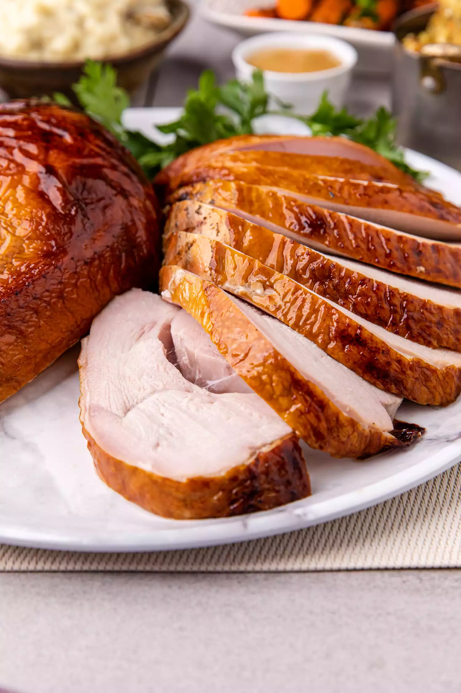

Smoked Turkey Breast

Description
Break out the smoker to create a stunning center piece of apple and sage brined turkey breast with crisp, golden skin smoked over cherry wood.
Ingredients
For the brine
- 2 quarts apple juice
- 1 cup (225g) kosher salt
- 1/2 cup (125g) brown sugar
- 1 head garlic, cut in half crosswise
- 1 tablespoon dried sage
- 3 dried bay leaves
- 2 quarts water, cold
For the turkey
- 1 (8- to 10-pound) free-range turkey breast, thawed
- 1 tablespoon extra virgin olive oil
Steps
- Prepare the brine:
In a large pot, add the apple juice, salt, brown sugar, garlic, sage, and bay leaves. Bring it up to a boil over high heat. Once the salt has dissolved remove the pot from the heat and add the water.
Bring the brine to room temperature on your kitchen counter and then chill it in the refrigerator until cold, at least 3 to 4 hours.
- Brine the turkey breast:
Once chilled, add the turkey to the chilled brine. This can be done directly in the same large pot or in a separate large container. Use a plate or bowl to weigh the turkey breast down so that it stays fully submerged. Refrigerate it for 24 hours.
- Dry the turkey breast:
Remove the turkey from the brine and place it on a wire rack set over a baking sheet. With a paper towel, remove any residual salt and brine ingredients from the turkey. Discard the brine.
Place the turkey in the refrigerator uncovered for 24 hours. This will help the skin to dry out and crisp when smoked.
- Oil the turkey breast:
Remove the turkey from the refrigerator. The skin might look taught. It's OK. Drizzle oil over the turkey can brush it over the surface or rub it in with your fingers.
- Prepare the grill or smoker:
Prepare the grill or smoker for indirect medium-low heat, 275ºF to 325º F.
For a gas grill: Use one or two burners to heat it. Keep at least one burner off—you will set the turkey breast on the side with the unlit burners.
For a charcoal grill: Add half a chimney of unlit coals to one side of the grill and half a chimney of lit coals on top of it. This allows the coals to maintain a low temperature for a longer period.
- Add the wood for smoking:
If you’re using a gas grill use wood chips either in a dedicated smoking box or a DIY aluminum foil pouch.
To make the aluminum pouch: Tear off about 12 inches of heavy-aluminum foil. Add a handful of chips to the center. Fold the pouch over and crimp the edges. Then, with a fork, pierce holes through just the top of the foil over the chips. Place the foil pouch right on the lit burners.
Once the charcoal grill comes to temperature, place three cherry wood chunks directly on the coals.
- Smoke the turkey breast:
Place the turkey breast over indirect medium-low heat.
On a gas grill, this will be where the burners are turned off.
On a charcoal grill, it’s the area without any lit coals beneath it.
Once the turkey breast is placed on the grill, close the lid.
- Check the breast:
After 15 minutes, and every 30 minutes thereafter, check the turkey breast and tent with foil if the skin starts to turn too dark.
If using, insert a wireless temperature probe into the center of the breast meat to keep an eye on the temperature.
When done, the turkey will be a dark amber from the smoke. Smoke the turkey breast until the internal temperature reads 165º F with an instant-read thermometer, 2 to 2 1/2 hours.
- Rest the turkey breast:
Transfer the turkey breast onto a platter and loosely tent it with aluminum foil. Allow it to rest for 15 to 20 minutes before serving.